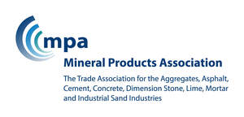
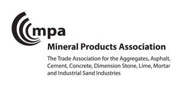

Trade Mark Journal No.2025/037 12 September 2025
UK00004249926 15 August 2025 (1,9,16,19,35,41,42)
Mark 1

Mark 2

- Class 1
- Moulding preparations; moulding sands and moulding silica; chemical products being additives for mortar; lime for use in agriculture; additives and chemicals for the production of concrete.
- Class 9
- Electronic publications; downloadable electronic publications; downloadable electronic publications provided on-line from databases and/or the Internet; downloadable electronic publications of books, audio books, magazines, periodicals, journals; pre-recorded digital media and recordings; computer software applications; electronic books; downloadable digital media and recordings; podcasts; data recordings including audio, video, still and moving images and text.
- Class 16
- Printed matter; publications; books; stationery; manuals; brochures; leaflets; reports; printed instructional and teaching materials.
- Class 19
- Building and construction materials and elements made of sand, stone, rock, clay, minerals and concrete; Silica sands; silica sand products; sand for use in preparing mortars; lime and sand mortar and cement and sand mortar; marine aggregates, marine sand and gravel; aggregates; industrial lime; quicklime; non-agricultural lime; limestone, chalk, marl, shells, slag; granular lime; industrial sand; asphalt; concrete and concrete products; cement and cement products.
- Class 35
- Organisation of trade fairs; market research; publicity; advertising; marketing; promotional services relating to quarries and quarry products, aggregate products, sand, gravel, lime, cement and concrete and the uses thereof; provision of trade and business information; publication of publicity material; business information services; the provision of market research and marketing information, and promotional services; information, advice and consultancy provided in relation to the aforesaid services.
- Class 41
- Education services; provision of training; arranging and conducting seminars, presentations, courses, exhibitions and conferences; providing information relating to courses and education; conferences; seminars; teaching; tuition; publication of books and printed matter; publication of materials relating to quarries and quarry products, aggregate products, sand, gravel, lime, cement and concrete and their uses; provision of on-line electronic publications; information, advice and consultancy provided in relation to the aforesaid services.
- Class 42
- Scientific and technological services relating to quarries and quarry products, aggregate products, sand, gravel, lime and concrete and their uses; research and design services relating to quarries and quarry products, aggregate products, sand, gravel, lime, cement and concrete and their uses; industrial analysis and research services; provision of reports, information and advice relating to quarries and quarry products, aggregate products, sand, gravel, lime, cement and concrete and their uses; provision of information to relevant authorities in respect of legislation, standards, specifications, codes of practice relating to quarries and quarry products, aggregate products, sand, gravel, lime, cement and concrete and their uses.
Mineral Products Association Limited
Representative: Marks & Clerk LLP